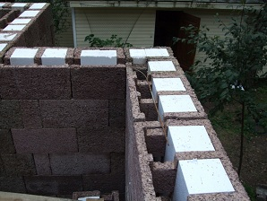
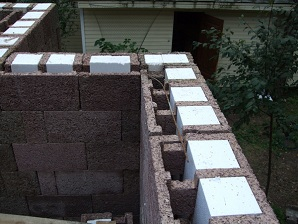

Технология производства DURISOL была разработана в Голландии в 30-х годах прошлого века и получила широкое распространение в домостроении в Западной Европе после второй мировой войны. В настоящее время владельцем торговой марки и патента на технологию DURISOL является строительный концерн Leier. Заводы, производящие продукцию под маркой DURISOL, расположены в Канаде, Голландии, Австрии, Словакии и России.
Технология DURISOL существует более 70 лет. Дома, построенные в Европе в середине 50-х годов прошлого века стоят до настоящего времени без каких-либо признаков разрушения. Можно добавить, что она отлично подходит для возведения как малоэтажных, так и многоэтажных зданий, в том числе и в сейсмически опасных районах.
   |
DURISOL - простые слагаемые комфорта
Экологически чистый: производится на основе природных материалов — дерева и камня, не выделяет вредных веществ, не загрязняет окружающую среду и поддается стопроцентной вторичной переработке. В объеме продукта древесная щепа составляет 85-90%.
Теплосберегающий: конструкция блоков с пенополистирольными вставками для наружных стен препятствует возникновению мостиков холода и создает высокую теплоизоляцию (до 3,5 м2 0С/Вт) бетонной массы внутри стены, которая аккумулирует тепло и отдает его обратно в помещение после отключения отопления. Обеспечивается снижение тепловых потерь и экономия потребления энергии. Обладая высокими теплосберегающими характеристиками, стена из блоков Durisol имеет небольшую толщину (макс. 375 мм), что увеличивает полезную площадь внутри помещения.
Звукоизолирующий: структура материала стен обеспечивает высокую звукоизоляцию внутренних помещений здания (индекс изоляции воздушного шума составляет 50-60 децибел). Это свойство наряду со стойкостью материала к атмосферным воздействиям используется также для строительства шумозащитных конструкций вдоль автомагистралей и железных дорог.
Воздухопроницаемый: пористая структура и конструкция блоков обеспечивают естественную циркуляцию водяного пара через стены, устанавливается сбалансированное соотношение температуры и влажности воздуха, которые являются определяющими элементами внутреннего климата.
Пожаробезопасный: материал блоков Durisol соответствуют требованиям пожарной безопасности, являясь слабогорючим (группа Г1), трудновоспламеняемым (группа В1) строительным материалом с малой дымообразующей способностью (группа Д1), нераспространяющий пламя (группа P1), малоопасный по токсичности (группа Т1). Огнестойкость стены в опалубке Дюрисол при нагрузке составляет более 150 минут (REI 150), оштукатуренные стены имеют класс опасности К0(45).
Стойкий к образованию плесени и грибков: материал обладает высокощелочными характеристиками (уровень рН около 11-12), что, наряду со свойством материала не впитывать влагу, предотвращает рост плесени и развитие грибков.
Стойкий к атмосферным воздействиям: материал является морозостойким и выдерживает резкие перепады температур (более 300 циклов), практически не впитывает влагу, что позволяет хранить блоки под открытым небом и производить строительные работы зимой (при температурах до -5°С, бетон с добавками).
Функциональный: спектр конфигураций блоков (рядные, универсальные и доборные) для перегородок, наружных и внутренних стен с различной несущей способностью дает возможность создавать разнообразные архитектурные формы и планировки зданий.
Легкий в обработке: материал легко резать, гвоздить, сверлить и фрезеровать для прокладки в стенах каналов инженерных коммуникаций или придания необходимой архитектурной конфигурации. Пористая структура облегчает финишную отделку штукатурными составами.
Долговечный: монолитная конструкция стен обеспечивает необходимую жесткость всего здания. Первые дома по технологии Дюрисол были построены еще в начале 50-х годов прошлого века и конструктивно находятся в отличном состоянии.
Экономичный: меньшая трудоемкость и временные затраты при строительстве, при эксплуатации дома - снижение расходов на отопление.
Примеры проектов
|
|